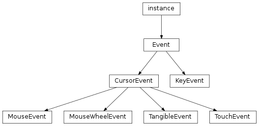
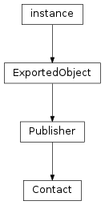

Input Handling¶


-
class
libavg.avg.Contact¶ Bases:
libavg.avg.PublisherA Contact encapsulates the information of one touch on an input device from the down event to an up event. It exposes some aggregate information about the touch - distance and direction travelled etc. - and supports event handlers that are only called for this single contact.
For compatibility reasons, a mouse device also produces contacts. A mouse contact exists from the press of a button to its release. If multiple buttons are pressed without a complete release (e.g. LEFTDOWN-RIGHTDOWN-LEFTUP-RIGHTUP), the mouse contact exists for the complete sequence.
Messages:
All message parameters are of type
CursorEvent. To get these messages, callPublisher.subscribe(). All subscribers are unsubscribed automatically after the up event.-
CURSOR_MOTION(cursorevent)¶ Emitted whenever the contact moves.
-
CURSOR_UP(cursorevent)¶ Emitted when the mouse button is released or the touch leaves the surface.
-
age¶ Time that has passed since the down event in milliseconds. Read-only.
-
distancefromstart¶ Distance of the current position from the initial position in pixels. Read-only.
-
distancetravelled¶ The total distance travelled since the initial down event. Read-only.
-
events¶ An array containing all events that this contact has generated in the past. Read-only.
-
id¶ A numerical id for this contact. This corresponds to the
CursorEvent.cursoridfield. Contacts for touch events have unique ids, while contacts for mouse events always have theid-1. ids are not reused. Read-only.
-
motionangle¶ Angle of the current position from the initial position in radians. Like all angles in libavg,
motionangleis 0 on the positive x axis and increases clockwise. Read-only.
-
connectListener(motionCallback, upCallback) → id¶ Deprecated since version 1.8: Use the message interface instead.
Registers event handlers that get called when CURSORMOTION and CURSORUP events for this
Contactoccur. Event handlers can be unregistered usingdisconnectListener(). They are automatically unregistered after the up event. Theidreturned is unique for this contact.
-
disconnectListener(id)¶ Deprecated since version 1.8: Use the message interface instead.
Unregisters an event handler. The parameter is the
idreturned inconnectListener(). It is an error to calldisconnectListener()with an invalid id.
-
getRelPos(node, abspos) → relpos¶ Transforms a position in window coordinates to a position in coordinates relative to
node.nodemust be one of the nodes the original down event of theContactwas over. In contrast toNode.getRelPos(), this method transforms window coordinates even if the node is inside a canvas.
-
-
class
libavg.avg.CursorEvent¶ Bases:
libavg.avg.EventBase class for all events which contain a position in the global coordinate system.
-
cursorid¶ A numerical identifier for the current cursor.
-
node¶ The
Nodethat the event occured in. If this isNone, the event happened outside of the application window and the cursor was captured by the application. Read-only.
-
pos¶ Position in the global coordinate system. Read-only.
-
source¶ The type of the device that emitted the event. See
Event.source. Read-only.
-
x¶ x position in the global coordinate system. Read-only.
-
y¶ y position in the global coordinate system. Read-only.
-
userid¶ If the input source supports user identification, this is the id of the user that touched.
-
-
class
libavg.avg.Event(type, source[, when])¶ Bases:
Boost.Python.instanceBase class for user input events.
Parameters: - type (type) – The type of the event. See
Event.type. - source (source) – The source of the event. See
Event.source. - when (Integer) – The time the event occured
-
inputdevice¶ The address of the device that emitted the event. Read-only
-
inputdevicename¶ The name of the device that emitted the event. Read-only.
-
source¶ One of
MOUSE,TOUCH,TRACK,CUSTOMorNONE. Read-only
-
type¶ One of
KEYUP,KEYDOWN,CURSORMOTION,CURSORUP,CURSORDOWN,CURSOROVERorCURSOROUT. Read-only.
-
when¶ The time when the event occured in milliseconds since program start. Read-only.
- type (type) – The type of the event. See
-
class
libavg.avg.KeyEvent¶ Bases:
libavg.avg.EventGenerated when a key is pressed or released.
-
keyname¶ The name of the key according to the current keyboard layout. This can be a character like “A” or a word like “Up” for the up arrow key. Read-only.
-
text¶ The text that the key represents, if any. Handles shifted (i.e., uppercase) characters and dead key combinations (i.e., “á” if “’” and “a” are pressed in succession).
-
modifiers¶ Any modifier keys pressed, or’ed together. Possible Modifiers are
KEYMOD_NONE,KEYMOD_LSHIFT,KEYMOD_RSHIFT,KEYMOD_LCTRL,KEYMOD_RCTRL,KEYMOD_LALT,KEYMOD_RALT,KEYMOD_LGUI,KEYMOD_RGUI,KEYMOD_NUM,KEYMOD_CAPS,KEYMOD_GUI,KEYMOD_CTRL,KEYMOD_SHIFT, andKEYMOD_ALT. Read-only.
-
scancode¶ A value that represents the physical position of the key on the keyboard. Independent of the keyboard language/layout. Read-only.
-
-
class
libavg.avg.MouseEvent(type, leftButtonState, middleButtonState, rightButtonState, pos, button[, speed, when])¶ Bases:
libavg.avg.CursorEventGenerated when a mouse-related event occurs.
The button that caused the event. Read-only.
-
cursorid¶ Always
-1for mouse events, but can be used to handle mouse and tracking events in one handler. Read-only.
Trueif the left mouse button is currently pressed. Read-only.
Trueif the middle mouse button is currently pressed. Read-only.
Trueif the right mouse button is currently pressed. Read-only.
-
source¶ Always
MOUSE. Read-only
-
class
libavg.avg.MouseWheelEvent(pos, motion[, when])¶ Bases:
libavg.avg.CursorEventGenerated when the mouse wheel is moved.
-
motion¶ Direction and magnitude of movement as an (x,y) vector.
-
-
class
libavg.avg.TangibleEvent(id, markerID, type, pos, speed, orientation)¶ Bases:
libavg.avg.CursorEventGenerated when a tangible event occurs. Tangible events happen when a surface that supports marker-based tracking is active. Supported only for TUIO-based surfaces.
-
markerID¶ The id of the marker. Unlike
cursorid,markerIDis persistent and stays the same if a tangible is removed from the surface and re-placed again.
-
orientation¶ The angle of the marker in radians.
-
-
class
libavg.avg.TouchEvent(id, type, pos, source[, speed])¶ Bases:
libavg.avg.CursorEventGenerated when a touch or other tracking event occurs. Touch events happen only when a multi-touch sensitive surface or other camera tracker is active.
-
area¶ Size of the blob found in pixels. Read-only.
-
cursorid¶ An identifier for the current touch. A single touch will generate a down event, zero or more motion events and a single up event in its lifetime, all with the same
cursorid.
-
eccentricity¶
-
handorientation¶ The angle of the hand relative to the finger.
handorientationis only defined for events withsource=TOUCH. If the tracker has detected a hovering hand attached to the finger, this is the actual hand-finger angle. If no hand was detected, the angle is approximated using the position of the touch on the surface.handorientationranges from-pitopi, with 0 being the positive x axis. Angles increase in a clockwise fashion.For
CURSORUPevents, the angle is always approximated.
-
majoraxis¶ Major axis of an ellipse that is similar to the blob. Read-only.
-
minoraxis¶ Minor axis of an ellipse that is similar to the blob. Read-only.
-
orientation¶ Angle of the blob in radians. For hovering hands, this is roughly the direction of the hand, modulo 180 degrees. Read-only.
-
source¶ sourcecan be eitherTRACKorTOUCH. In most cases, actual touches will generateTOUCHevents. When used with a DI device, the internal tracker also generatesTRACKevents for hands above the surface. When used with an FTIR device, the internal tracker generatesTRACKevents for the actual touches. Read-only.
-
getRelatedEvents() → events¶ Only if supported by the hardware: Returns a python tuple containing the events ‘related’ to this one. For
TOUCHevents (fingers), the tuple contains one element: the correspondingTRACKevent (hand). ForTRACKevents, the tuple contains allTOUCHevents that belong to the same hand.
-